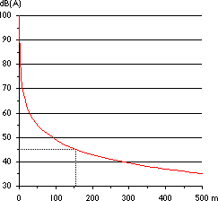

Measuring
and Calculating Sound Levels
The
dB(A) Scale
Public authorities around the world use the so-called dB(A),
or decibel (A) , scale to quantify sound measurement.
To give you an idea of the scale, look at the table below.
| Sound Level |
threshold of hearing | whisper | talking | city traffic | rock concert | jet engine 10 m away |
| dB(A) | 0 | 30 | 60 | 90 | 120 | 150 |
The dB(A) scale measures the sound intensity over the whole range
of different audible frequencies (different pitches), and then
it uses a weighing scheme which accounts for the fact that the
human ear has a different sensitivity to each different sound
frequency. Generally, we hear better at medium (speech range)
frequencies than at low or high frequencies. The dB(A) system
says, that the sound pressure at the most audible frequencies
are to be multiplied by high numbers while the less audible frequencies
are multiplied by low numbers, and everything is then added up
to get an index number.
 (The (A) weighing scheme is used for weak
sounds, such as wind turbines. There exist other weighing schemes
for loud sounds called (B) and (C), although they are rarely
used).
(The (A) weighing scheme is used for weak
sounds, such as wind turbines. There exist other weighing schemes
for loud sounds called (B) and (C), although they are rarely
used).
 The dB-scale is a logarithmic, or relative
scale. This means, that as you double the sound pressure (or
the energy in the sound) the index increases by approximately
3. A sound level of 100 dB(A) thus contains twice the energy
of a sound level of 97 dB(A). The reason for measuring sound
this way is that our ears (and minds) perceive sound in terms
of the logarithm of the sound pressure, rather than the sound
pressure itself.
The dB-scale is a logarithmic, or relative
scale. This means, that as you double the sound pressure (or
the energy in the sound) the index increases by approximately
3. A sound level of 100 dB(A) thus contains twice the energy
of a sound level of 97 dB(A). The reason for measuring sound
this way is that our ears (and minds) perceive sound in terms
of the logarithm of the sound pressure, rather than the sound
pressure itself.
 Most people will say, that if you increase
the dB(A) by 10, you double the subjective loudness of
the sound.
Most people will say, that if you increase
the dB(A) by 10, you double the subjective loudness of
the sound.
 In case you are interested in the exact definitions,
take a look at the Reference
Manual on Acoustics of this web site.
In case you are interested in the exact definitions,
take a look at the Reference
Manual on Acoustics of this web site.
Sound
Propagation and Distance: Inverse Square Law
 The energy in sound waves (and thus the sound
intensity) will drop with the square of the distance to the sound
source. In other words, if you move 200 m away from a wind turbine,
the sound level will generally be one quarter of what
it is 100 m away. A doubling of your distance will thus make
the dB(A) level drop by 6.
The energy in sound waves (and thus the sound
intensity) will drop with the square of the distance to the sound
source. In other words, if you move 200 m away from a wind turbine,
the sound level will generally be one quarter of what
it is 100 m away. A doubling of your distance will thus make
the dB(A) level drop by 6.
 At one rotor diameter distance (43 m) from
the base of a wind turbine emitting 100 dB(A) you will generally
have a sound level of 55-60 dB(A) corresponding to a (European)
clothes dryer. 4 rotor diameters (170 m) away you will have 44
dB(A), corresponding to a quiet living room in a house. 6 rotor
diameters (260 m) away you will have some 40 dB(A).
At one rotor diameter distance (43 m) from
the base of a wind turbine emitting 100 dB(A) you will generally
have a sound level of 55-60 dB(A) corresponding to a (European)
clothes dryer. 4 rotor diameters (170 m) away you will have 44
dB(A), corresponding to a quiet living room in a house. 6 rotor
diameters (260 m) away you will have some 40 dB(A).
 The precise relationship between sound level
and distance from the sound source is given in a table on the
Reference Manual
on Acoustics of this web site.
The precise relationship between sound level
and distance from the sound source is given in a table on the
Reference Manual
on Acoustics of this web site.
 In practice, sound absorption and reflection
(from soft or hard surfaces) may play a role on a particular
site, and may modify the results shown here.
In practice, sound absorption and reflection
(from soft or hard surfaces) may play a role on a particular
site, and may modify the results shown here.
Adding
Sounds from Several Sources
If we have two wind turbines rather than one, located at the
same distance from our ears, naturally the sound energy
reaching us will double. As we have just learned, this means
that two turbines will increase the sound level by 3 dB(A).
Four turbines instead of one (at the same distance) will increase
the sound level by 6 dB(A). You will actually need ten
turbines placed at the same distance from you, in order to perceive
that the subjective loudness has doubled (i.e. the dB
level has increased by 10).
 If you wish to learn the details about adding
sounds together, take a look at the Reference
Manual on Acoustics in this web site.
If you wish to learn the details about adding
sounds together, take a look at the Reference
Manual on Acoustics in this web site.
The
Pure Tone Penalty
The fact that the human ear (and mind) discerns pure tones more
easily than (random) white noise, means the authorities may wish
to take that into account when doing sound estimates. They consequently
often have rules which specify that you add a certain number
to the dB(A) figure in case you have pure tones present in a
sound.
Wind
Turbine Noise Information in Practice
In accordance with international standards manufacturers generally
specify a theoretical dB(A) level for sound emissions which assumes
that all sound originates from a central point, although in practice,
of course, it will originate from the whole surface of the machine
and its rotor.
 Sound pressure thus calculated is typically
around 96-101 dB(A) for modern wind turbines. The figure itself
is rather uninteresting, since there will not be a single point,
where you can experience that sound level! Rather, it is useful
for predicting the sound level at different distances from the
wind turbine.
Sound pressure thus calculated is typically
around 96-101 dB(A) for modern wind turbines. The figure itself
is rather uninteresting, since there will not be a single point,
where you can experience that sound level! Rather, it is useful
for predicting the sound level at different distances from the
wind turbine.
 Pure tones have generally be eradicated
completely for modern wind turbines, at least in the case of
the modern turbines listed in the catalogue on the Wind
Power Calculator page.
Pure tones have generally be eradicated
completely for modern wind turbines, at least in the case of
the modern turbines listed in the catalogue on the Wind
Power Calculator page.
Legal
Noise Limits
At distances above 300 m the maximum theoretical noise level
from high quality wind turbines will generally be significantly
below 45 dB(A) outdoors, corresponding to the legislation in
Denmark. (For built-up areas with several houses, a noise limit
of 40 dB(A) is the legal limit in Denmark).
 Noise regulations vary from country to country.
In practice the same machine designs can be used everywhere.
Noise regulations vary from country to country.
In practice the same machine designs can be used everywhere.
Current
Practice: Calculations Rather than Measurement
Calculating potential sound emission from wind turbines is generally
important in order to obtain planning permission (from the public
authorities) for installing wind turbines in densely populated
areas.
 Generally speaking, it is far easier to calculate
the potential sound emissions than to measure them in practice.
Generally speaking, it is far easier to calculate
the potential sound emissions than to measure them in practice.
 The reason why it is difficult to measure
the sound is that the sound level has to be some 10 dB(A) above
the background noise in order to measure it properly. The background
noise from leaves, birds, and traffic will frequently be above
30 dB(A), however. In most places in the world public authorities
therefore rely on calculations rather than measurements, when
granting planning permission for wind turbines.
The reason why it is difficult to measure
the sound is that the sound level has to be some 10 dB(A) above
the background noise in order to measure it properly. The background
noise from leaves, birds, and traffic will frequently be above
30 dB(A), however. In most places in the world public authorities
therefore rely on calculations rather than measurements, when
granting planning permission for wind turbines.

|
Back | Home
| Forward |
© Copyright 2000 Soren Krohn.
All rights reserved.
Updated 9 September 2000
http://www.windpower.org/tour/env/db/dbdef.htm